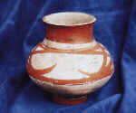

人文历史
江阴市位于长江三角洲对外经济开放 区。北枕长江，南临无锡，西接常州、南 京，东连苏州、上海。江阴古称暨阳，已 有2500多年见诸文字记载的历史，南梁绍 泰元年定名江阴，是历史上我国东南沿海 对外贸易的重要商港。北宋政治家王安石 为江阴黄田港写下了脍炙人口的诗篇：“ 黄田港口水如天，万里风墙看贾船。海外 珠犀常入市，人间鱼蟹不论钱。” |
|
江阴地处苏南“鱼米之乡”，自古有“中义之邦”美称。改革开 放以来，江阴古城换新貌，成为江办省第一个国家卫生城市和全国城 市环境综合整治优秀城市。人民生活步入小康，生活质量不断改善， 市民素质和社会文明程度全面提高。 江阴历史悠久，人杰地灵。春秋战国时期，江阴为吴公子季札、 楚相春申君黄歇封地。故有“延陵古邑”、“春申旧封”之称。境内 有明代地理学家徐霞客故居，新文化运动先驱刘半农和中国现代民族 音乐一代宗师刘天华纪念馆...... |
|
明末义民领袖阎应元 |
明代著名地理学家 旅行家文学家徐霞客 |
近代音乐家刘天华 |
|  | ||
六朝－虎子 |
汉－铜皿 |
新时器时代小漆绘壶 |
元－银制有棱果盒 |
宋－八棱漆盒 |
宋－戟金长方漆盒 |